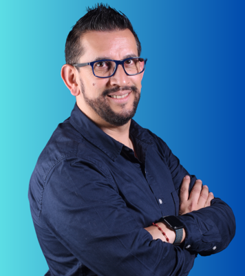

Mercadeo · Emprendimiento · IA aplicada · 25+ años en aula y empresa
CEO ICONE ialabs · Docente activo Universidad EAN, Politécnico Grancolombiano y SENA · Mentor de Emprendimiento certificado por el Politécnico Grancolombiano · Speaker Internacional EXMA · Nominado Mentor del Año Universidad EAN.

Profesional con más de 25 años de carrera ejecutiva en multinacionales de consumo masivo (Nestlé, Nutresa, Kellogg's, CasaLuker) combinada con 15+ años de docencia universitaria activa y 10+ años acompañando emprendedores en Colombia y Latinoamérica. Esta dualidad aula-empresa es el diferencial central: lo que enseño hoy es lo que ejecuto con clientes; lo que aplico con clientes es lo que llevo al aula.
Formación académica orientada a la estrategia y el liderazgo: MBA por la Universidad EAN, Maestría en Liderazgo Estratégico por la Escuela de Negocios de Navarra (España), Especialización en Gerencia de Mercadeo por el Politécnico Grancolombiano e Ingeniero Comercial por la UDCA. Docente activo en simultáneo en Universidad EAN (donde diseño Ambientes Virtuales de Aprendizaje como Virtual Environment Architect), Politécnico Grancolombiano y SENA.
Mi posicionamiento académico se mueve en tres dominios complementarios donde aporto valor diferencial al aula universitaria: Mercadeo (estrategia comercial, brand activation, trade marketing), Emprendimiento (modelos de negocio, mentoría, ecosistemas de innovación) e IA aplicada a los negocios (orquestación de IAs generativas, predictivas y visuales en flujos comerciales reales). Soy Mentor de Emprendimiento certificado por el Politécnico Grancolombiano, Consultor Certificado en Empresas de Innovación por la EANT, certificado por EXMA como Speaker e inversor en startups y Jurado de Emprendimiento del MinCiT.
Reconocimientos institucionales recientes incluyen nominación a Mentor del Año por la Universidad EAN, membresía en la Junta Asesora de Mompreneurs Colombia (junto a Juan Felipe Bayón, ex-presidente de Ecopetrol), membresía en la Junta Directiva de Emprendedores de Confandi, y rol de Jurado y Mentor del Programa Creadores de Nestlé. Más de 500 empresas acompañadas, 3.000 estudiantes impactados y 300 emprendedores formados en EAN Impacta durante más de cuatro años continuos.
Universidad EAN — Colombia
Escuela de Negocios de Navarra — España
Politécnico Grancolombiano — Colombia
Universidad de Ciencias Aplicadas y Ambientales — UDCA
Estas tres áreas representan la intersección entre mi formación de posgrado, mi carrera ejecutiva en multinacionales y mi práctica docente activa. Cada una incluye cursos específicos que estoy en capacidad de dictar en pregrado, posgrado y educación continua.
Área 1
Mi área natural por formación (Especialización Poli + MBA EAN) y carrera ejecutiva. Brand Activation Manager de Maggi en Nestlé, Trade Training Manager, Commercial Planning Lead. Conozco el mercadeo desde la trinchera del canal y desde el aula.
Área 2
Mentor de Emprendimiento certificado por el Politécnico Grancolombiano. 4+ años acompañando a +300 emprendedores en EAN Impacta. Junta Asesora Mompreneurs (20.000+ emprendedoras LATAM). Jurado MinCiT. Mentor GoFest. Práctica viva y continua.
Área 3
Creador del ICONE Method (Identifica · Conecta · Ejecuta) — sistema de orquestación de IAs generativas, predictivas y visuales en flujos comerciales reales. Diseño y dicto el módulo de IA aplicada al retail en el Diplomado de Plaza Imperial. Co-creador del programa IA para BPO con SENA.
Docente activo en simultáneo en tres instituciones colombianas, con responsabilidades de diseño curricular, dictado y diseño de Ambientes Virtuales de Aprendizaje.
Docente activo en simultáneo en 4 Ambientes Virtuales de Aprendizaje (EAN Virtual 2.0): Digital Business, Marketplaces & Social Commerce · Estrategia Comercial e Inteligencia de Mercados · Innovación y Emprendimiento Digital · Liderazgo, Equipos y Cultura Organizacional. Acompañamiento sostenido durante 4+ años a más de 300 emprendedores del programa EAN Impacta. Nominado a Mentor del Año por la Universidad EAN. Docente del programa EAN Rural — extensión universitaria a contextos rurales.
Docente activo en programas de pregrado y educación continua. Diseño y dictado completo del Diplomado en Experiencia al Consumidor en alianza con Plaza Imperial — currículo, módulos, guías académicas, sistema de evaluación y módulo dedicado a IA aplicada al retail. Mentor de Emprendimiento Certificado por la institución.
Diseño y dictado del programa IA para BPO dirigido a trabajadores activos del sector BPO en Montería. Alianza tripartita SENA + Politécnico + Plaza Imperial para reskilling profesional en IA aplicada al puesto de trabajo en sector regulado.
Mentor activo en programas universitarios y ecosistemas de emprendimiento e innovación. Acompañamiento metodológico a equipos en ideación, validación, modelo de negocio y aplicación temprana de IA al proyecto emprendedor.
La cancha ejecutiva que sostiene la docencia: experiencia directa en estrategia comercial, brand activation y formación de equipos en organizaciones de gran escala.
Empresa propia de consultoría estratégica, formación e infoproductos digitales. +500 empresas acompañadas en LATAM. Creador del ICONE Method — sistema de tres pasos (Identifica · Conecta · Ejecuta) refinado durante más de dos décadas y respaldado por MinCiT, iNNpulsa, EAN, Politécnico Grancolombiano, Mompreneurs, Confandi, GoFest, Plaza Imperial y SENA.
Liderazgo de la planeación comercial del canal tradicional a nivel nacional. Diseño de pronósticos, estrategia de cobertura y gestión de incentivos cruzados con la fuerza de ventas.
Responsable de la activación comercial de la marca Maggi a escala nacional: lanzamientos, embudo de canal moderno y tradicional, campañas integradas con marketing, ventas y trade. Núcleo de mi expertise en mercadeo aplicado.
Formación y desarrollo de la fuerza de ventas comercial. Diseño de programas pedagógicos in-company aplicados a equipos comerciales. Cierra el círculo entre mi experiencia ejecutiva y la docencia: ya entonces enseñaba dentro de la multinacional.
Más de 9 años en posiciones directivas comerciales en multinacionales de consumo masivo. Liderazgo de equipos comerciales nacionales, negociación con grandes superficies y diseño de estrategia de canales.
Politécnico Grancolombiano
EANT
EXMA Festival
EXMA
Ministerio de Comercio, Industria y Turismo (MinCiT)
Universidad EAN
Nestlé Colombia
EXMA · GoFest · Congreso Iberoamericano
Universidad EAN — reconocimiento por trayectoria en EAN Impacta
Mompreneurs Colombia — comunidad de 20.000+ emprendedoras en LATAM, junto con Juan Felipe Bayón (ex-presidente de Ecopetrol)
Confandi — Caja de Compensación con red empresarial activa
Nestlé Colombia — programa corporativo de innovación
GoFest — el ecosistema de emprendimiento más importante de Latinoamérica
EAN Impacta · Universidad Javeriana · iNNpulsa Colombia · Cámara de Comercio · EAN Rural
Marco propio integrador en 3 pasos (Identifica · Conecta · Ejecuta) aplicado en +15 sectores y avalado institucionalmente
Término propio: prototipar con prompts antes que con código — validar hipótesis de IA en horas, no semanas
Diseño completo en EAN Virtual 2.0: Digital Business · Estrategia Comercial · Innovación · Liderazgo
Diseño curricular completo: Plaza Imperial + Politécnico Grancolombiano — cohorte 2026 activa
Co-diseño SENA + Politécnico Grancolombiano — reskilling profesional aplicado al sector
Kit de Diagnóstico Empresarial · IA para Negocios · Marca Personal con Autoridad · Plan de Ventas 90 días · LinkedIn para Líderes — en producción en iconeialabs.com
Disponibilidad confirmada para modalidad presencial, virtual o híbrida en pregrado, posgrado y educación continua. Para programar entrevista o solicitar documentos formales de soporte (títulos, certificaciones, hoja de vida tradicional), contactar directamente: